用法：A型题点选项即判；X型题先多选、再点【判卷】；答完自动展开解析。刷完本课再过一遍底部【本课速记卡】，效果最好。
一、概述（组胚基础）5 题
A型·单选Q1P1 · 组胚
肺传导区最后的一段管道是
答案与解析
答案：C
终末细支气管是传导区最后一段；其后的呼吸性细支气管起属呼吸区（气体交换部分）。
📖 讲义定位：P1 · 组胚
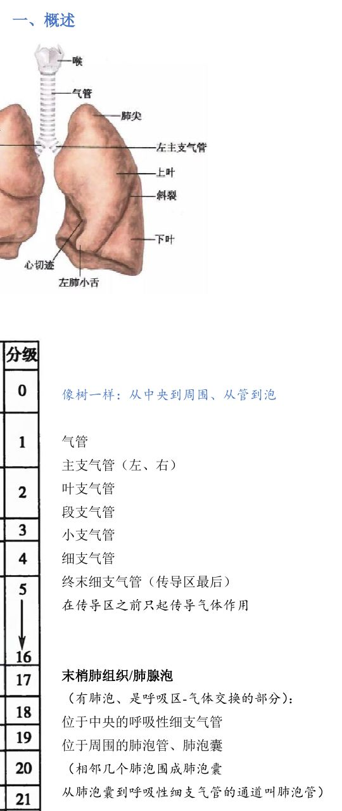
📷 讲义原图 · P1 · 组胚
A型·单选Q2P3 · 组胚
肺腺泡（肺的基本功能单位）的组成是
答案与解析
答案：D
肺腺泡＝末梢肺组织：呼吸性细支气管＋肺泡管＋肺泡囊＋肺泡。
📖 讲义定位：P3 · 组胚
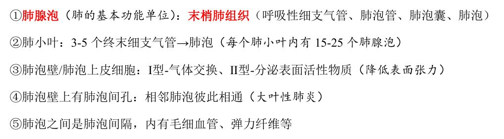
📷 讲义原图 · P3 · 组胚
A型·单选Q3P3 · 组胚
肺小叶的组成是
答案与解析
答案：B
肺小叶＝3-5 个终末细支气管及其肺泡；每个肺小叶内有 15-25 个肺腺泡。
📖 讲义定位：P3 · 组胚
A型·单选Q4P3 · 组胚
肺泡上皮细胞中，分泌表面活性物质的是
答案与解析
答案：A
Ⅰ 型肺泡细胞——气体交换；Ⅱ 型肺泡细胞——分泌表面活性物质（降低表面张力）。
📖 讲义定位：P3 · 组胚
X型·多选Q5P3 · 组胚
关于肺的结构，下列叙述正确的有
答案与解析
答案：BD
C 错：终末细支气管属传导区，不属于肺腺泡；A 错：分泌表面活性物质的是 Ⅱ 型肺泡细胞。
📖 讲义定位：P3 · 组胚
二、慢性支气管炎10 题
A型·单选Q6P6 · 慢支炎
慢性支气管炎的临床诊断标准是
答案与解析
答案：B
『3+2』：症状每年至少持续 3 个月、连续 2 年以上。
📖 讲义定位：P6 · 慢支炎
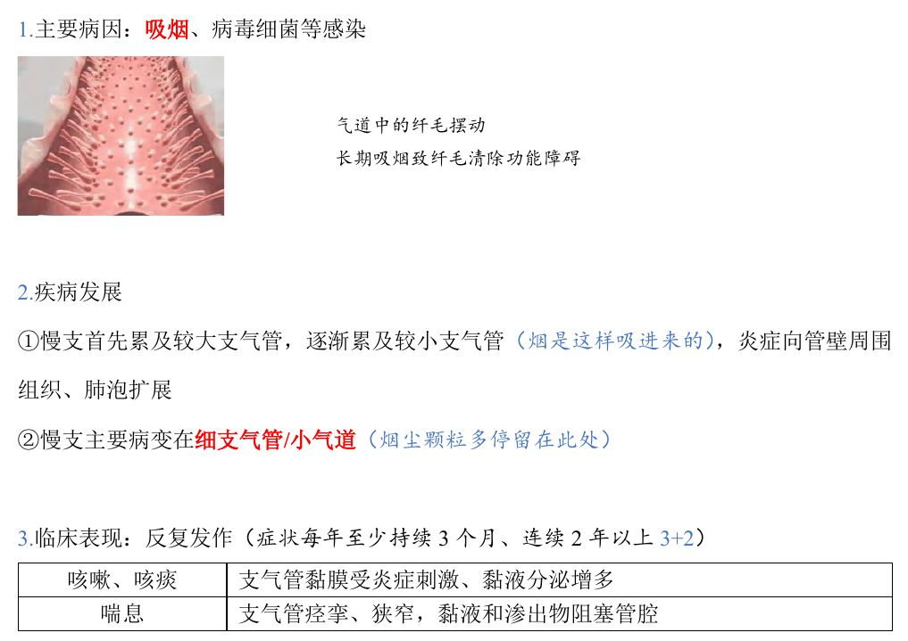
📷 讲义原图 · P6 · 慢支炎
A型·单选Q7P6 · 慢支炎
慢性支气管炎的主要病因是
答案与解析
答案：D
主要病因：吸烟、病毒细菌等感染。
📖 讲义定位：P6 · 慢支炎
A型·单选Q8P6 · 慢支炎
慢性支气管炎的主要病变部位在
答案与解析
答案：C
病变首先累及较大支气管、逐渐累及较小支气管；主要病变在细支气管/小气道（烟尘颗粒多停留此处）。
📖 讲义定位：P6 · 慢支炎
X型·多选Q9P6 · 慢支炎
慢性支气管炎中常见的病变有
答案与解析
答案：ABCD
四项均属慢支炎病理变化；此外还有上皮变性坏死脱落、杯状细胞增多、腺体增生肥大、慢性炎细胞浸润、管壁纤维化等。（注意：这些增生不是异型增生）
📖 讲义定位：P6 · 慢支炎
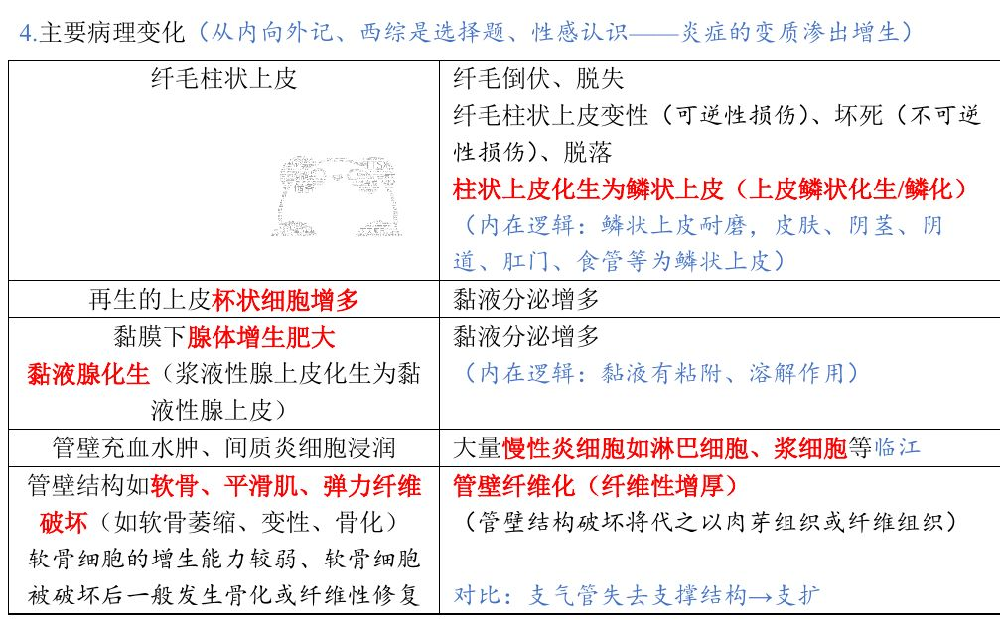
📷 讲义原图 · P6 · 慢支炎
A型·单选Q10P6 · 慢支炎
慢支炎时，支气管柱状上皮可化生为
答案与解析
答案：A
柱状上皮化生为鳞状上皮（鳞化）；另注意『黏液腺化生』是腺体层面——浆液性腺上皮化生为黏液性腺上皮。
📖 讲义定位：P6 · 慢支炎
A型·单选Q11P6 · 慢支炎
慢支炎患者出现喘息的主要原因是
答案与解析
答案：D
喘息＝支气管痉挛、狭窄＋黏液和渗出物阻塞管腔。
📖 讲义定位：P6 · 慢支炎
A型·单选Q12P7 · 慢支炎
慢支炎喘息型患者，支气管管壁平滑肌可发生
答案与解析
答案：A
平滑肌可萎缩、断裂；喘息型者常增生肥大（常有过敏史）。
📖 讲义定位：P7 · 慢支炎
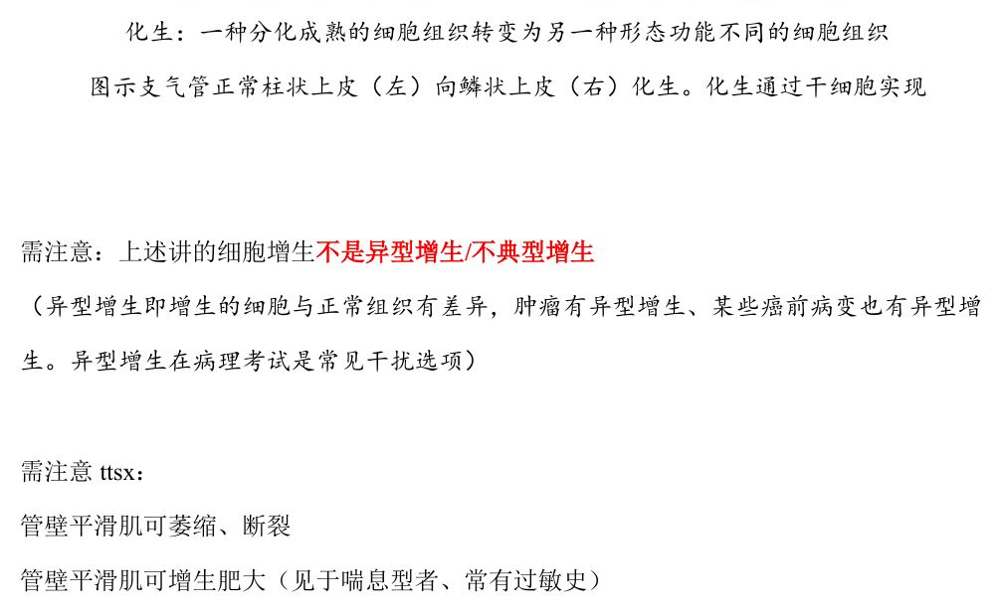
📷 讲义原图 · P7 · 慢支炎
A型·单选Q13P6 · 慢支炎
慢支炎时支气管软骨被破坏后，其修复方式多为
答案与解析
答案：C
软骨细胞的增生能力较弱；被破坏后一般发生骨化或纤维性修复。
📖 讲义定位：P6 · 慢支炎
A型·单选Q14P6 · 慢支炎
慢支炎的『黏液腺化生』是指
答案与解析
答案：B
黏液腺化生：浆液性腺上皮化生为黏液性腺上皮→黏液分泌增多。
📖 讲义定位：P6 · 慢支炎
A型·单选Q15P6 · 慢支炎
慢支炎的病变发展顺序是
答案与解析
答案：B
『烟是这样吸进来的』：先大后小，并波及管壁周围组织与肺泡。
📖 讲义定位：P6 · 慢支炎
三、肺气肿13 题
A型·单选Q16P8 · 肺气肿
肺气肿最常见的病因是
答案与解析
答案：A
肺气肿病因：慢支炎最常见。
📖 讲义定位：P8 · 肺气肿
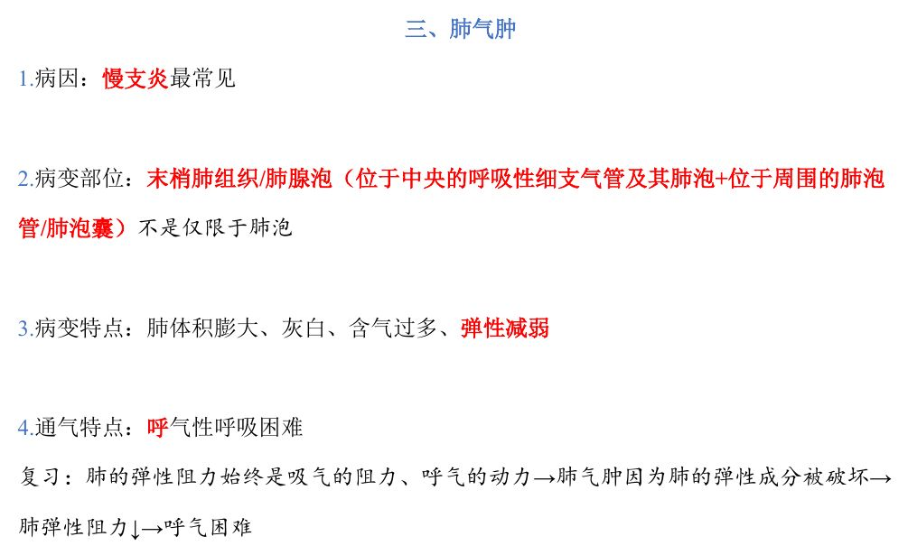
📷 讲义原图 · P8 · 肺气肿
A型·单选Q17P8 · 肺气肿
肺气肿的病变部位在
答案与解析
答案：C
病变部位＝末梢肺组织/肺腺泡——包括中央的呼吸性细支气管及其肺泡＋周围的肺泡管/肺泡囊，不是仅限于肺泡。
📖 讲义定位：P8 · 肺气肿
A型·单选Q18P8 · 肺气肿
肺气肿患者呼吸困难的特点是
答案与解析
答案：D
肺的弹性阻力是吸气的阻力、呼气的动力；肺气肿时弹性成分被破坏→弹性阻力↓→呼气困难。
📖 讲义定位：P8 · 肺气肿
A型·单选Q19P9 · 肺气肿分类
腺泡中央型肺气肿的病理表现是
答案与解析
答案：A
腺泡中央型（最常见）：呼吸性细支气管及其肺泡扩张明显、周围肺泡管/肺泡囊基本正常。机制：终末细支气管、一级呼吸性细支气管管腔狭窄→其远端的二级呼吸性细支气管呈囊状扩张。
📖 讲义定位：P9 · 肺气肿分类
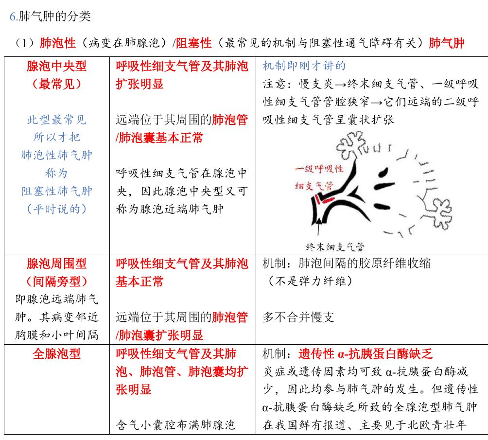
📷 讲义原图 · P9 · 肺气肿分类
A型·单选Q20P9 · 肺气肿分类
腺泡周围型（间隔旁型）肺气肿的病变表现是
答案与解析
答案：C
腺泡周围型（腺泡远端）：呼吸性细支气管及其肺泡基本正常、远端肺泡管/肺泡囊扩张明显；病变邻近胸膜和小叶间隔。
📖 讲义定位：P9 · 肺气肿分类
A型·单选Q21P9 · 肺气肿分类
腺泡周围型（间隔旁型）肺气肿的发生机制是
答案与解析
答案：D
机制是胶原纤维收缩（不是弹力纤维）；此型多不合并慢支。
📖 讲义定位：P9 · 肺气肿分类
A型·单选Q22P9 · 肺气肿分类
全腺泡型肺气肿的发生机制是
答案与解析
答案：B
全腺泡型：呼吸性细支气管、肺泡管、肺泡囊均扩张；机制＝遗传性 α1-抗胰蛋白酶缺乏，主要见于北欧青壮年。
📖 讲义定位：P9 · 肺气肿分类
X型·多选Q23P9 · 肺气肿机制
慢支炎引起肺气肿的机制包括
答案与解析
答案：ACD
B 错：胶原纤维收缩是腺泡周围型（间隔旁型）肺气肿的机制。
📖 讲义定位：P9 · 肺气肿机制
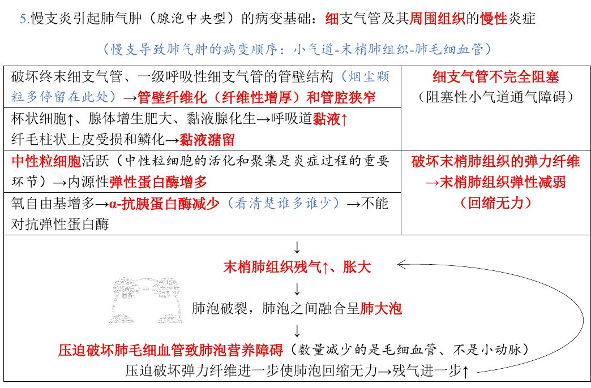
📷 讲义原图 · P9 · 肺气肿机制
A型·单选Q24P9 · 肺气肿机制
肺气肿时肺泡壁受压破坏，数量减少的是
答案与解析
答案：C
压迫破坏肺毛细血管致肺泡营养障碍——数量减少的是毛细血管（不是小动脉）。
📖 讲义定位：P9 · 肺气肿机制
A型·单选Q25P10 · 间质性肺气肿
间质性肺气肿的特点是
答案与解析
答案：D
间质性肺气肿：空气进入肺间质；病因＝肋骨骨折、胸部穿透伤、剧烈咳嗽；特点＝串珠状气泡、皮下气肿。
📖 讲义定位：P10 · 间质性肺气肿
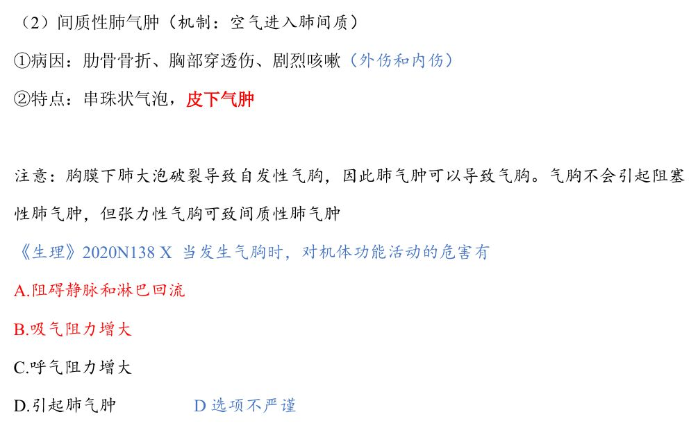
📷 讲义原图 · P10 · 间质性肺气肿
A型·单选Q26P10 · 注意
关于肺气肿与气胸的关系，正确的是
答案与解析
答案：A
气胸不会引起阻塞性肺气肿；张力性气胸可致间质性肺气肿。
📖 讲义定位：P10 · 注意
A型·单选Q27P11 · 其它类型
瘢痕旁（不规则）肺气肿的特点是
答案与解析
答案：B
瘢痕旁/不规则肺气肿：瘢痕牵拉（胶原纤维收缩）、累及肺腺泡的结构不定、主要累及肺泡。对比：腺泡周围型——属于肺泡性/阻塞性肺气肿（但与阻塞无关）、累及腺泡远端所有结构。
📖 讲义定位：P11 · 其它类型
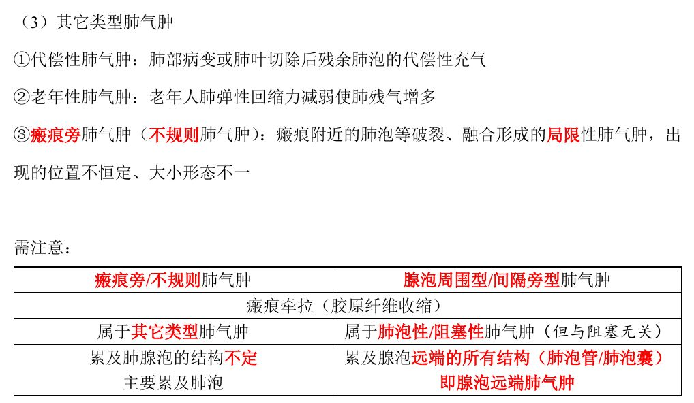
📷 讲义原图 · P11 · 其它类型
X型·多选Q28P11 · 其它类型
属于『其它类型肺气肿』的有
答案与解析
答案：ABD
其它类型：代偿性、老年性、瘢痕旁（不规则）；间质性肺气肿单独为一类（C 错）。
📖 讲义定位：P11 · 其它类型
四、慢性肺源性心脏病5 题
A型·单选Q29P11 · 肺心病
慢性肺心病发生的关键环节是
答案与解析
答案：D
链条：细支气管及周围组织慢性炎症→肺气肿→毛细血管数量减少→肺循环阻力增加→肺动脉高压（关键）→肺心病。
📖 讲义定位：P11 · 肺心病
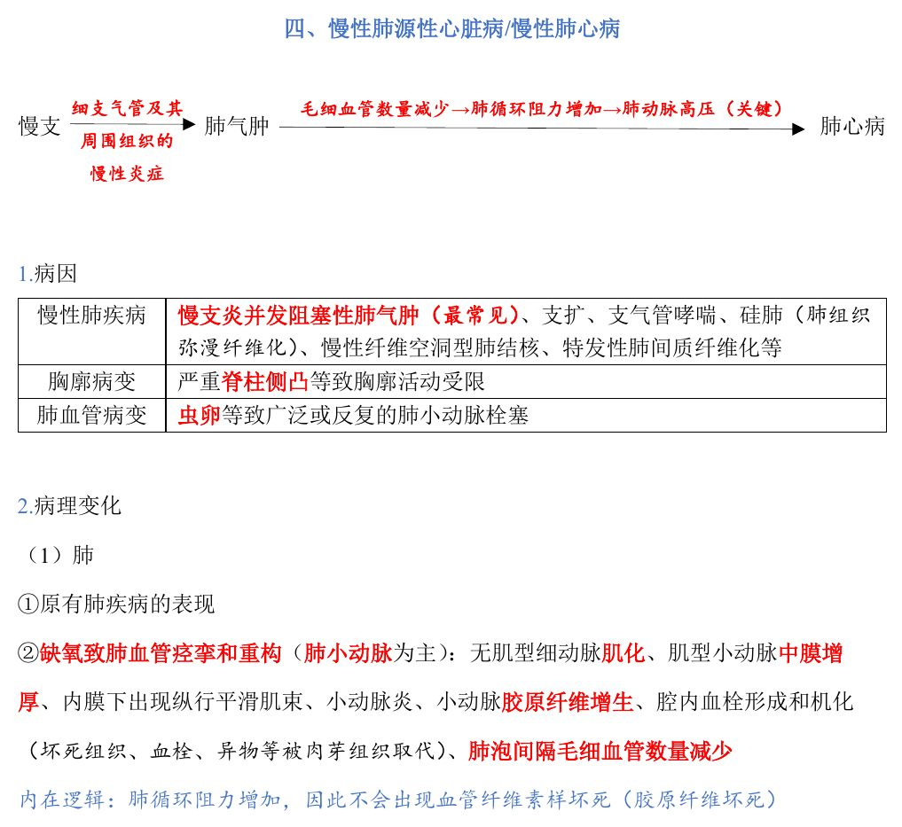
📷 讲义原图 · P11 · 肺心病
A型·单选Q30P11 · 肺心病
慢性肺心病最常见的病因是
答案与解析
答案：C
慢性肺疾病中：慢支炎并发阻塞性肺气肿最常见（另有支扩、哮喘、硅肺、慢性纤维空洞型肺结核、特发性肺间质纤维化等）。
📖 讲义定位：P11 · 肺心病
A型·单选Q31P12 · 肺心病
慢性肺心病右心室肥厚的病理诊断标准是
答案与解析
答案：B
诊断病理形态标准：肺动脉瓣下 2cm 处右心室前壁肌层厚度超过 5mm。
📖 讲义定位：P12 · 肺心病
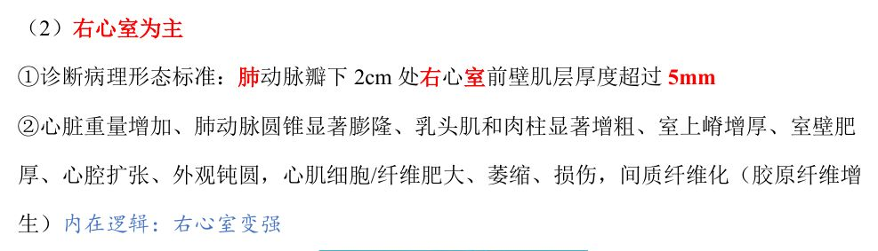
📷 讲义原图 · P12 · 肺心病
X型·多选Q32P12 · 肺心病
慢性肺心病的主要病理特点有
答案与解析
答案：AC
D、B 错：病变以右心室为主。肺心病心脏：重量增加、肺动脉圆锥膨隆、乳头肌和肉柱增粗、室上嵴增厚、室壁肥厚、心腔扩张、外观钝圆。
📖 讲义定位：P12 · 肺心病
X型·多选Q33P12 · 肺心病
慢性肺心病时肺小动脉的变化有
答案与解析
答案：ABC
D 错：肺循环阻力增加所致，不会出现血管纤维素样坏死（胶原纤维坏死）。另有内膜下纵行平滑肌束、小动脉炎、肺泡间隔毛细血管数量减少等。
📖 讲义定位：P12 · 肺心病
本课速记卡
组胚速记
- 传导区最后＝终末细支气管；其后呼吸性细支气管起属呼吸区
- 肺腺泡（基本功能单位）＝呼吸性细支气管＋肺泡管＋肺泡囊＋肺泡
- 肺小叶：3-5 个终末细支气管及其肺泡（每小叶 15-25 个腺泡）
- Ⅰ 型肺泡细胞：气体交换；Ⅱ 型：分泌表面活性物质（降表面张力）
- 肺泡间孔使相邻肺泡相通；肺泡间隔内有毛细血管、弹力纤维
慢支炎
- 病因：吸烟、感染；主要病变在细支气管/小气道
- 临床：每年持续≥3 个月、连续≥2 年（3+2）；咳嗽咳痰、喘息
- 病理（内→外）：纤毛倒伏脱失→上皮变性坏死脱落→鳞化；杯状细胞↑、腺体肥大、黏液腺化生（浆液性→黏液性）；慢性炎细胞；软骨破坏（骨化/纤维修复）、平滑肌萎缩断裂或增生肥大（喘息型）→管壁纤维化
- 注意：上述增生不是异型增生
肺气肿
- 病因：慢支炎最常见；部位：末梢肺组织/腺泡；特点：体积膨大、含气过多、弹性减弱→呼气性呼吸困难
- 机制：细支气管不完全阻塞＋弹力纤维破坏（弹性蛋白酶↑、α1-AT↓）→残气↑→肺大泡→压破毛细血管
- 腺泡中央型（最常见）：呼吸性细支气管及肺泡扩张、远端基本正常
- 腺泡周围型（间隔旁）：远端肺泡管/囊扩张、近端正常；机制＝肺泡间隔胶原纤维收缩；多不合并慢支
- 全腺泡型：全部扩张；遗传性 α1-AT 缺乏（北欧青壮年）
- 间质性：空气入肺间质（骨折/穿透伤/剧咳）→串珠状气泡、皮下气肿；肺大泡破裂→自发性气胸
慢性肺心病
- 链条：慢支→肺气肿→毛细血管减少→肺循环阻力↑→肺动脉高压（关键）→肺心病
- 最常见病因：慢支炎并发阻塞性肺气肿
- 肺血管：缺氧→痉挛和重构（细动脉肌化、中膜增厚等）；无纤维素样坏死
- 右心室标准：肺动脉瓣下 2cm 右室前壁肌层厚度＞5mm；肺动脉圆锥膨隆、肉柱乳头肌增粗
📚 网站题库（导入）6 组 · 13 题
说明：本部分为外部题库导入（来源：「西综题库」网站 · 病理学），题干、选项与答案保留原样；标注「教师补充」的答案未经讲义逐项复核。做题方式：点字母选择（多选后点【判卷】；答案可点开「答案与出处」查看）。
腺泡中央型肺气肿B型题
A 终末细支气管、一级呼吸性细支气管管腔狭窄
B 二级呼吸性细支气管扩张
C 呼吸性细支气管及其肺泡基本正常
D 肺泡间隔的胶原纤维收缩
E 远端位于其周围的肺泡管/肺泡囊基本正常
F 炎症所致氧自由基增多→α1-抗胰蛋白酶减少
G 呼吸性细支气管及其肺泡扩张明显
H 遗传性α1-抗胰蛋白酶缺乏
I 远端位于其周围的肺泡管/肺泡囊扩张明显
J 主要见于北欧青壮年
K 最常见的肺气肿类型
L 多不合并慢支
网站题W1第11讲 · 第9页
腺泡中央型肺气肿
答案与出处
答案：BEGK
📖 第11讲 · 第9页
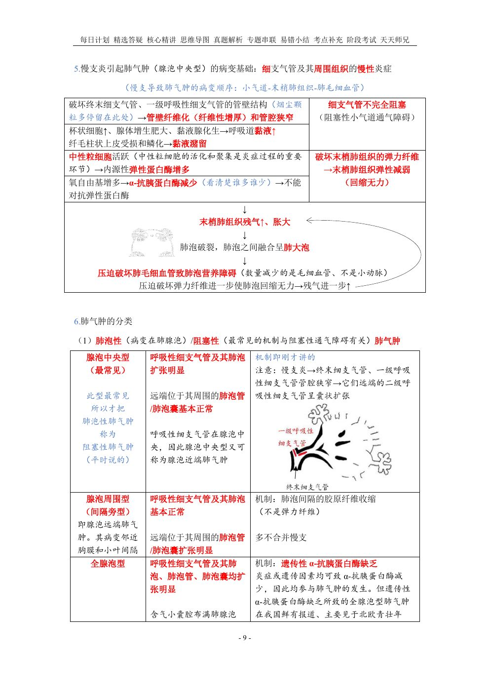
📷 讲义原图 · 第11讲 · 第9页
网站题W2第11讲 · 第9页
腺泡周围型/间隔旁型肺气肿
答案与出处
网站题W3第11讲 · 第9页
全腺泡型肺气肿
答案与出处
网站题W4第11讲 · 第9页
慢支炎机制
答案与出处
慢性支气管炎与肺气肿的机制B型题
A 中性粒细胞活跃导致内源性弹性蛋白酶增多
B 破坏终末细支气管、一级呼吸性细支气管的管壁结构，导致管壁纤维化和管腔狭窄
C 纤毛柱状上皮受损和鳞化导致黏液潴留
D 氧自由基增多导致α1-抗胰蛋白酶减少
E 柱状细胞增多、腺体增生肥大、黏液腺化生，导致呼吸道黏液增多
网站题W5第11讲 · 第9页
与细支气管不完全阻塞有关
答案与出处
网站题W6第11讲 · 第9页
与末梢肺组织弹性减弱有关
答案与出处
肺泡性/阻塞性肺气肿B型题
A 肋骨骨折
B 腺泡中央型
C 代偿性肺气肿
D 胸部穿透伤
E 老年性肺气肿
F 腺泡周围型
G 剧烈咳嗽
H 全腺泡型
I 瘢痕旁肺气肿（不规则肺气肿）
J 串珠状气泡
K 皮下气肿
网站题W7第11讲 · 第9页
肺泡性/阻塞性肺气肿
答案与出处
网站题W8第11讲 · 第11页
间质性肺气肿
答案与出处
答案：ADGJK
📖 第11讲 · 第11页
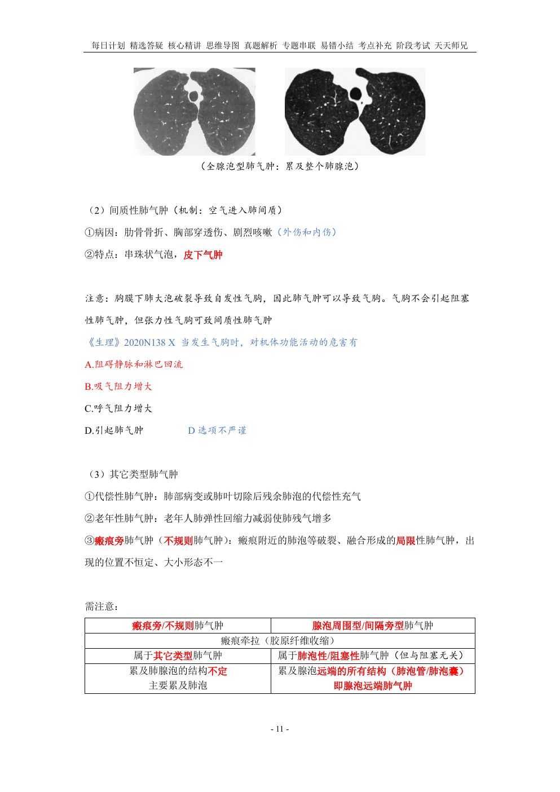
📷 讲义原图 · 第11讲 · 第11页
网站题W9第11讲 · 第11页
其他类型肺气肿
答案与出处
瘢痕旁与腺泡周围型肺气肿B型题
A 属于肺泡性/阻塞性肺气肿
B 瘢痕牵拉
C 累及肺腺泡的结构不定，主要累及肺泡
D 属于其他类型肺气肿
E 累及腺泡远端的所有结构（肺泡管/肺泡囊），即腺泡远端肺气肿
网站题W10第11讲 · 第11页
瘢痕旁/不规则肺气肿
答案与出处
网站题W11第11讲 · 第11页
腺泡周围型/间隔旁型肺气肿
答案与出处
瘢痕旁肺气肿属于单项选择教师补充
A 肺泡性肺气肿
B 间质性肺气肿
C 局限性肺气肿
D 代偿性肺气肿
网站题W12第11讲 · 第11页
瘢痕旁肺气肿属于(单选)
答案与出处
慢性肺源性心脏病的肺部病变有多项选择教师补充
A 无肌型细动脉肌化
B 肌型小动脉中膜增生肥厚
C 肺小动脉纤维素样坏死
D 肺泡间隔毛细血管减少
网站题W13第11讲 · 第12页
慢性肺源性心脏病的肺部病变有(多选)
答案与出处
答案：ABD
📖 第11讲 · 第12页
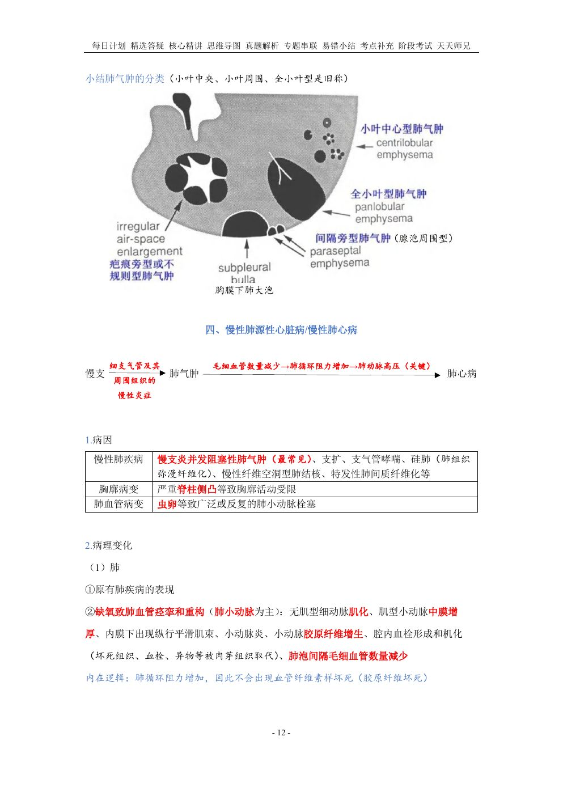
📷 讲义原图 · 第11讲 · 第12页
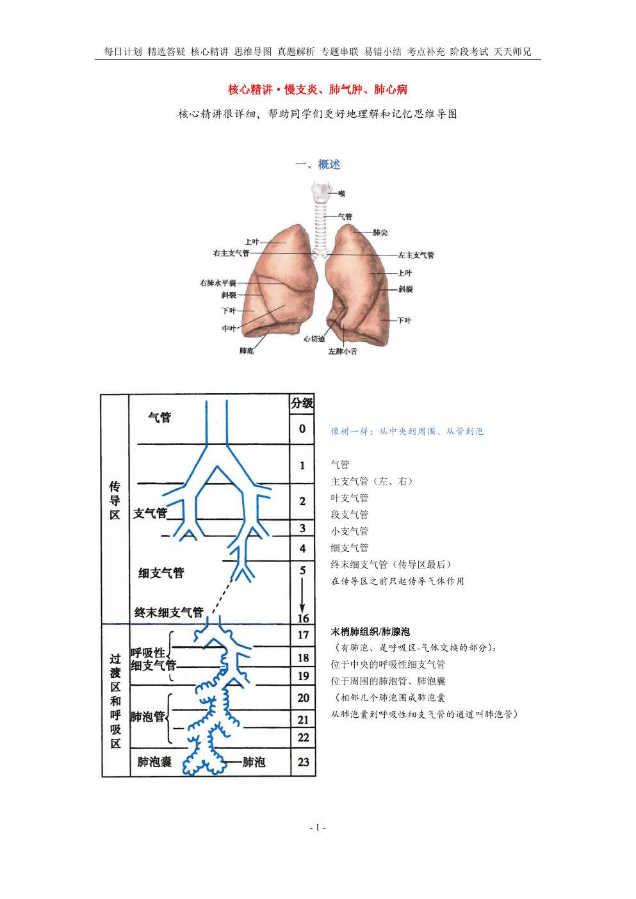
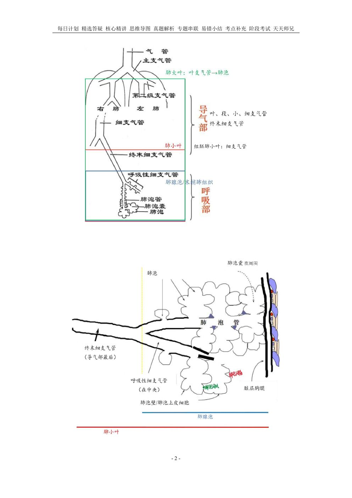
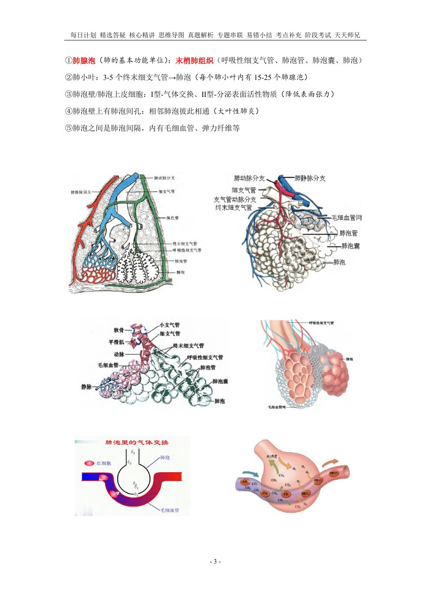
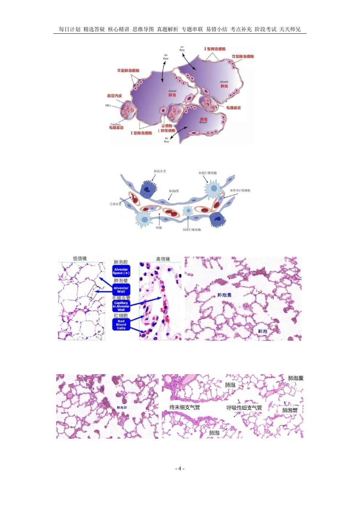
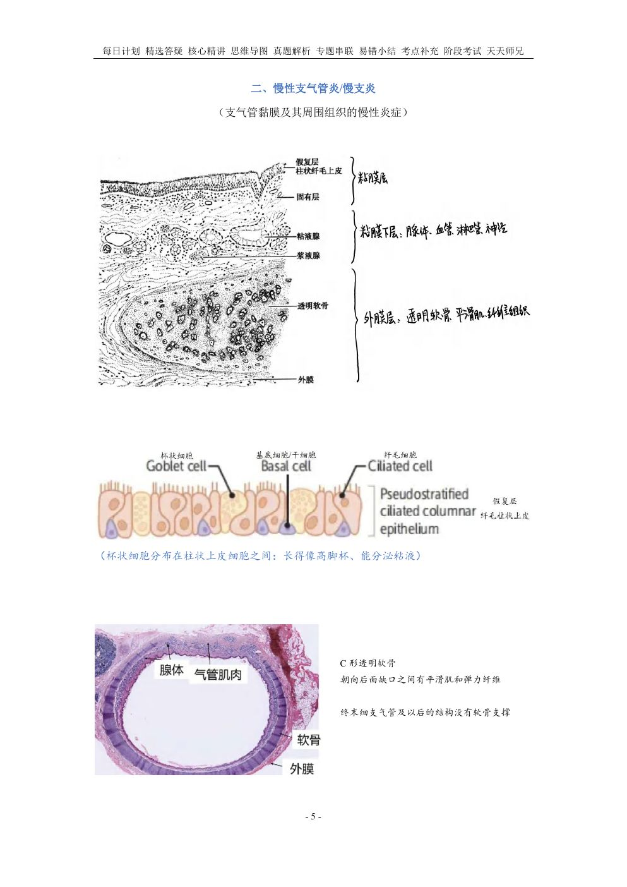
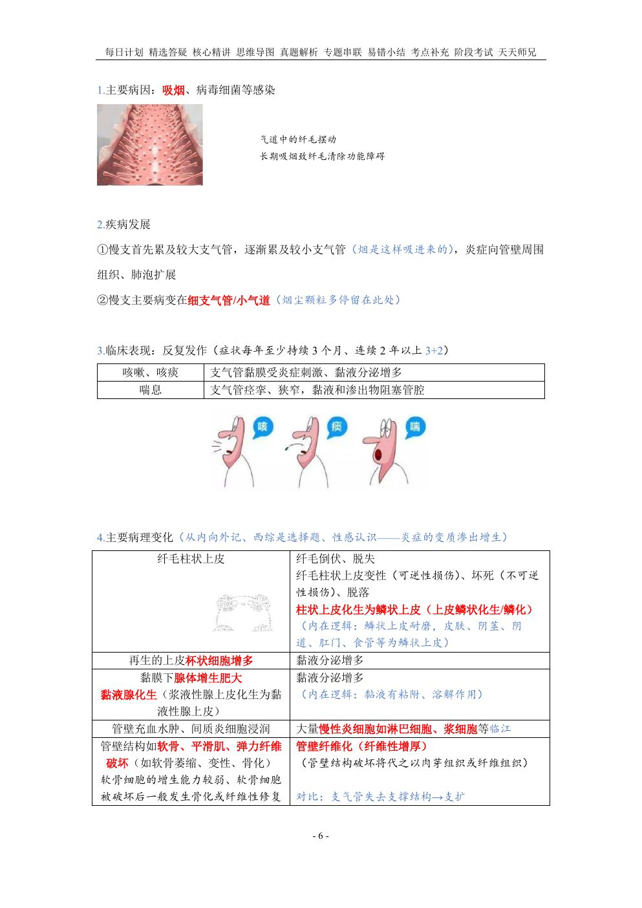
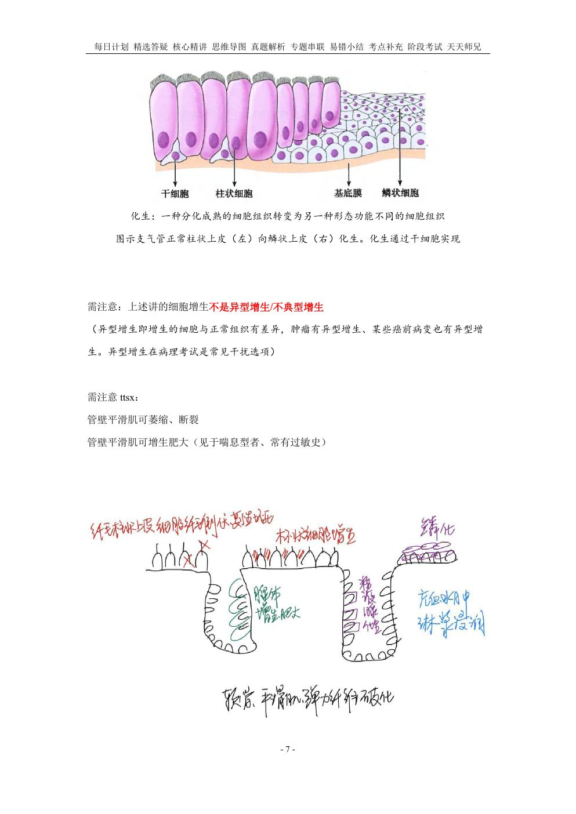
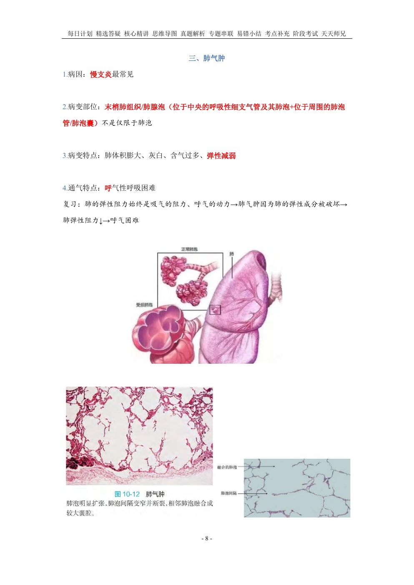
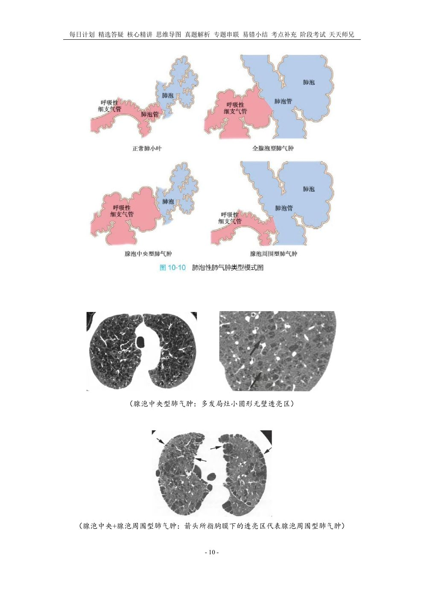
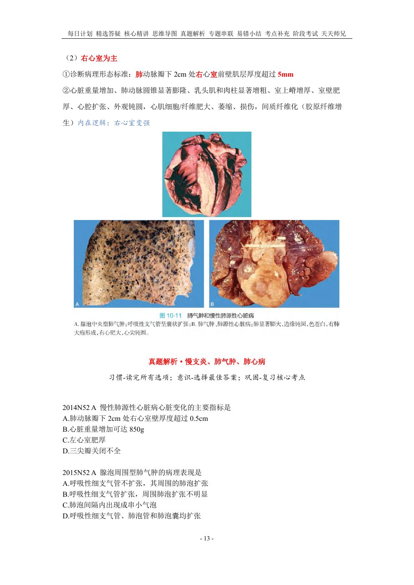
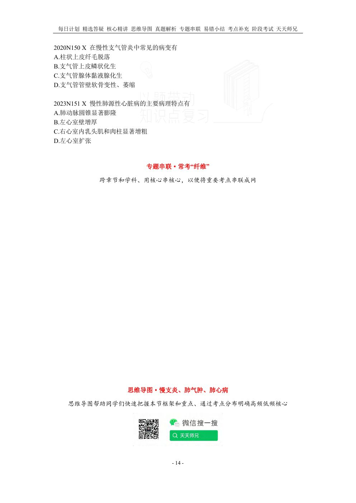